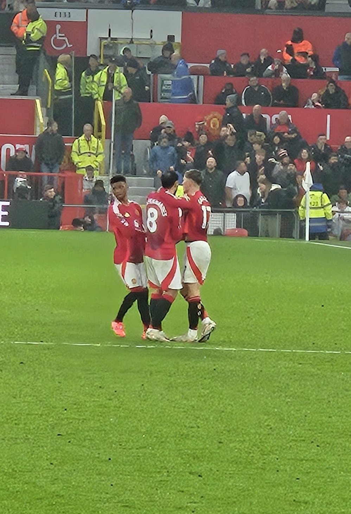
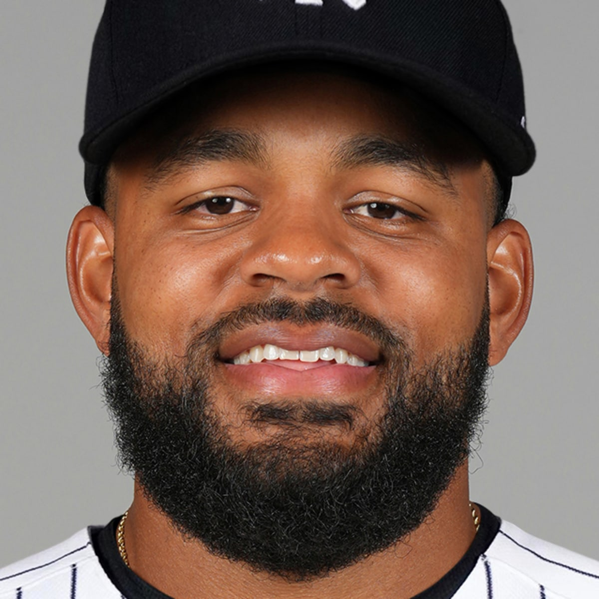
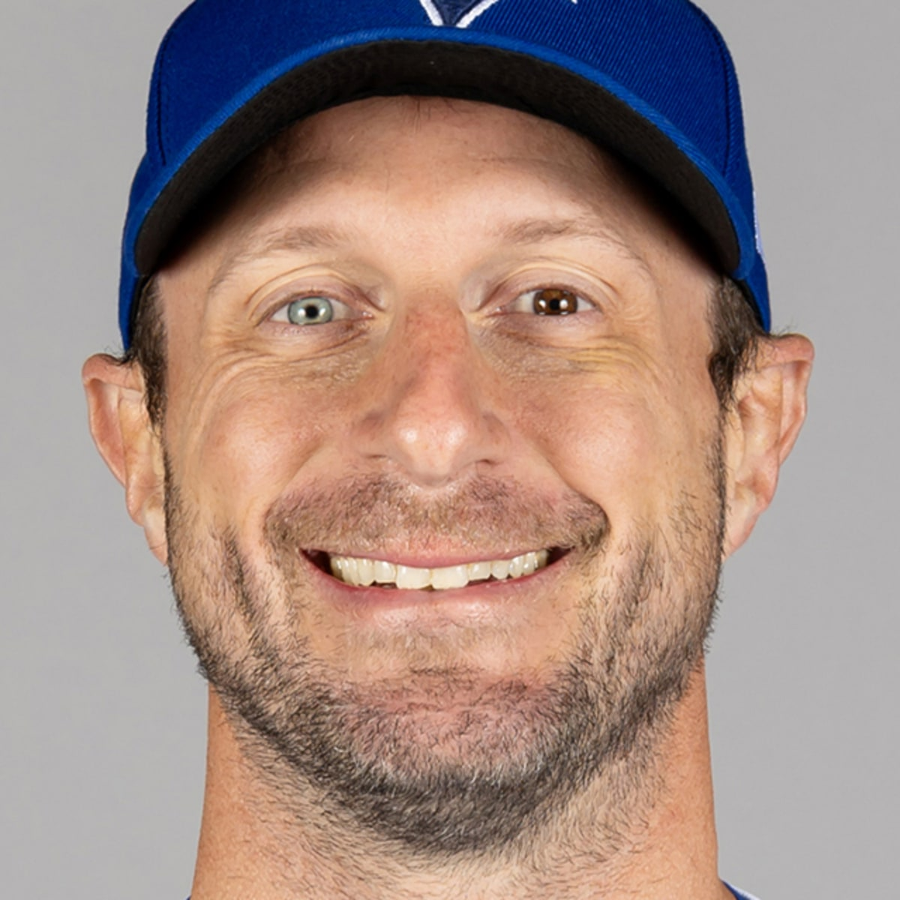

SFANDOM MODELLIVE
EDGE SCORE82/100
FORM8.4
MATCHUP7.9
SIGNALHIGH
예측을 넘어, 근거로
모든 경기에는 패턴이 있고,
모든 판단에는 근거가 있습니다.
SFANDOM은 기록·상대 전적·최근 경기력·확률 데이터를 종합해, 더 빠르고 정확한 스포츠 분석과 예측을 제공합니다.
DAILY NEWS · 2026.08.31 KST
글로벌 보도량·라이벌 구도·기록성과 공식 경기 자료를 함께 대조해 고른 두 장면입니다.

01 · CAPTAIN'S HAT-TRICKManchester United는 Old Trafford에서 선제 실점한 뒤 Bruno Fernandes의 세 골을 앞세워 Ipswich를 5–2로 꺾었습니다. Fernandes는 40분 동점골, 61분 페널티킥, 67분 세 번째 골을 기록했습니다.
한 골을 넣은 뒤 패스 역할로 돌아가지 않고 박스 안 침투를 계속한 선택이 경기의 방향을 바꿨습니다. 전반의 플레이메이커가 후반에는 직접 마무리하는 공격수가 됐습니다.
EN Bruno Fernandes scored a hat-trick as Manchester United came from behind to beat Ipswich 5–2 and claim its first league win of the season.
PHOTO · HAINOTDEPTRAI · CC0 1.0 · WIKIMEDIA COMMONS · BRUNO FERNANDES #8

02 · RIVALRY ROUTNew York Yankees는 Boston을 16–1로 꺾고 시즌 상대 전적 우위와 동률 시 타이브레이커를 확보했습니다. Heliot Ramos는 이적 후 첫 홈런을 3점포로 장식했고, Austin Wells는 8회에만 홈런 두 개를 쳤습니다.
점수보다 중요한 것은 8회에도 타선이 멈추지 않았다는 점입니다. 라이벌전 타이브레이커가 걸린 경기에서 하위 타순까지 장타가 연결되며 불펜 소모 없이 우위를 확정했습니다.
EN The Yankees routed Boston 16–1, clinched the season series and scored nine runs in the eighth behind two Austin Wells homers.
PHOTO · MLB OFFICIAL PLAYER PROFILE · HELIOT RAMOS #34 · NEW YORK YANKEES

KAIRO FEATURE · DATA + STORY
Max Scherzer는 Seattle전에서 7이닝 1피안타 1볼넷 10탈삼진 무실점으로 Toronto의 7–0 승리를 이끌었습니다. 7회 Cal Raleigh를 삼진으로 잡으며 Gaylord Perry를 넘어 통산 3,535탈삼진, 역대 9위에 올랐습니다.
42세의 투수가 97구 중 67구를 스트라이크로 넣고 단 두 명만 출루시켰습니다. 노장의 서사는 버틴 시간이 아니라, 여전히 존을 지배하는 방식에서 완성됩니다.
PHOTO · MLB OFFICIAL PLAYER PROFILE · MAX SCHERZER #31 · TORONTO BLUE JAYS
NEXT MATCH · MLB
2026.09.01 KST · 07:40
SAN DIEGO @ CINCINNATI · GREAT AMERICAN BALL PARK


MLB's first 50-HR / 50-SB season · 2024
화려한 숫자보다 판단에 도움이 되는 근거를 우선합니다. 모든 경기를 다루기보다 분석 가치가 분명한 경기에 집중합니다.
검증 가능한 데이터와 일관된 기준으로 분석합니다.
VERIFIED DATA ↗기록, 경기력, 상대 전적을 하나의 분석으로 연결합니다.
EVIDENCE FIRST ↗모든 경기가 아니라 분석 가치가 있는 경기에 집중합니다.
SELECTIVE EDGE ↗결과뿐 아니라 판단 과정과 근거까지 다시 봅니다.
REVIEW PROCESS ↗SFANDOM ODDS MAKER
최근 경기력, 선발과 라인업, 상대 전적, 경기 환경과 배당 움직임을 함께 비교해 최종 판단의 근거를 만듭니다.
분석 프레임워크 보기 →SPORTS CONTENT
KAIRO'S NOTE
SFANDOM은 스포츠 분석가 Ji와 AI 분석 파트너 KAIRO가 함께 운영합니다. Ji의 분석 경험과 판단에 KAIRO의 데이터 정리·비교 분석·복기가 더해져, 경기 전후의 핵심 근거를 빠르고 이해하기 쉽게 전달합니다.
SFANDOM MANIFESTO
우리는 예측을 포장하지 않습니다.
우리는 판단의 근거를 설계합니다.